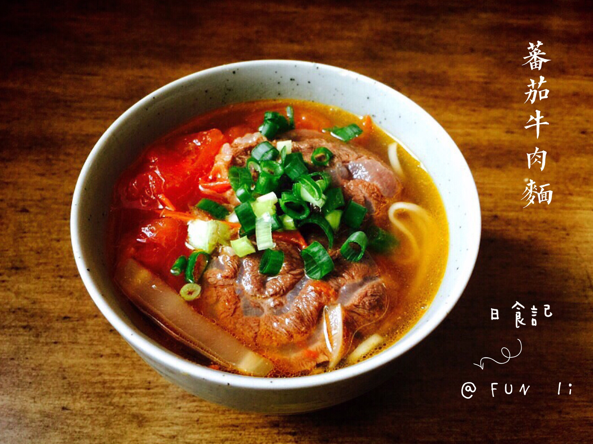

Tomato Beef Noodle Soup

This is a wonderfully sweet, sour, and savory bowl of noodles!
This stuff is very yummy. If you don't like it, you're probably a hater with no taste buds.
Yummy yummy in my tummy (not yours only mine).
Ingredients:
- spice bag
- beef shank
- cooking oil
- garlic
- onions
- green onions
- soy sauce
- tomatos
- beef bouillon
- water
- bok choy
Steps:
- Bring all spices for spice bag and toast them on a dry pan until you can smell aroma, about 2 minutes. Place in a spice bag and fold it tight. Set aside.
- Blanch beef in a large pot (8 qt) of boiling water for 1 minute to get rid of excess blood. Drain and set aside. Quickly rinse now-empty-pot to make soup.
- Heat now-empty-pot over high heat and add cooking oil. Add garlic, ginger, onion and green onion. Sauté everything about 1 to 2 minute, then add toban djan and rock sugar. Sauté all together for 1 minute then add soy sauce, shaoxing wine, dark soy sauce and salt, stir.
- Add blanched beef, tomatoes and beef bouillon. Stir everything together so tomato melts and beef will absorb sauces, about 3 to 4 minutes. Pour water and finally add spice bag. Stir one good time and bring it boil. When it’s boiling, cover and reduce heat to medium low and simmer for 1 hour 30 minutes.
- When soup has about 10 minutes to finish cooking, bring another pot of salted water to boil. Blanch baby bok choy for 1 minute and remove from water. Set aside. Cook noodles by following directions of package you’re using. Drain and place in a serving bowl. Pour beef soup into noodle bowl, garnish with chopped green onions and cilantro. Serve immediately. Enjoy!